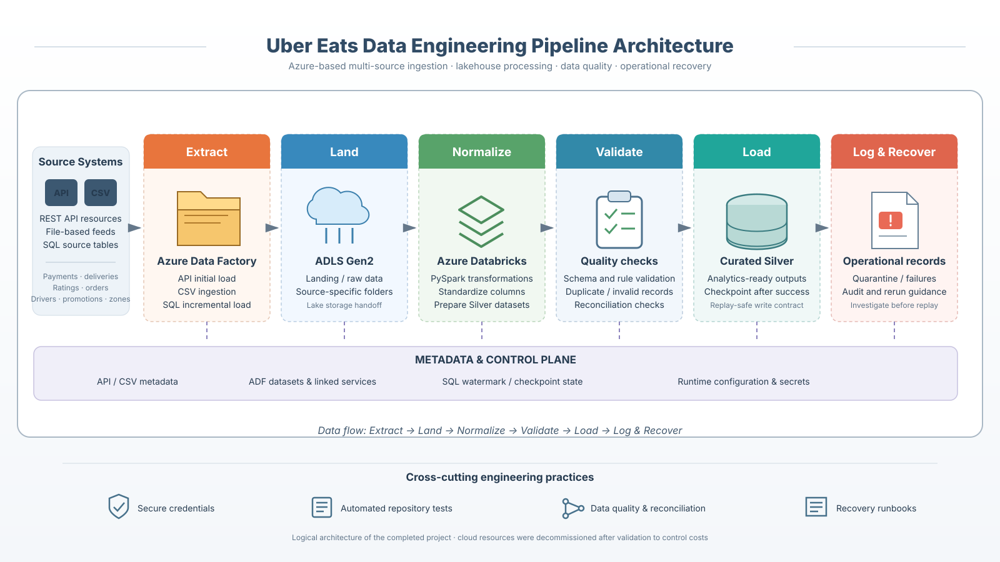
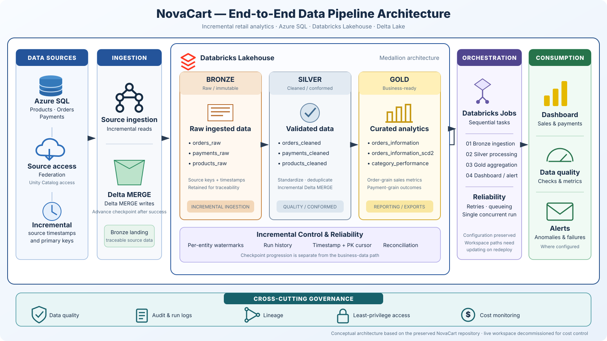
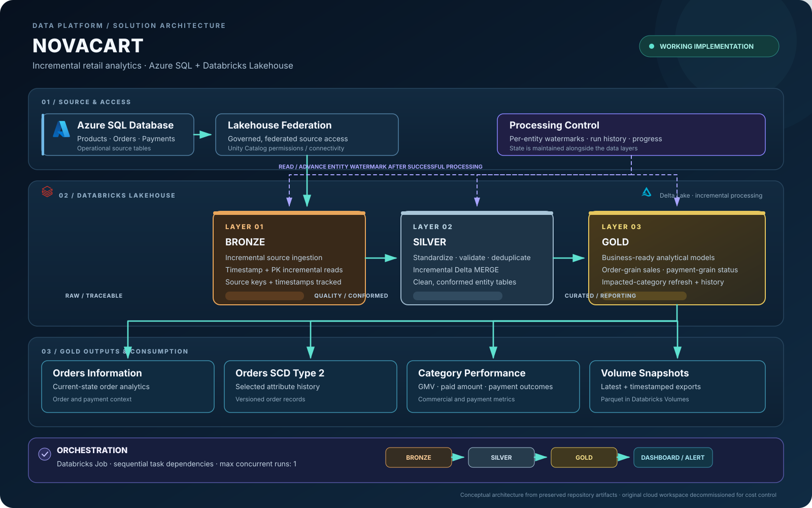
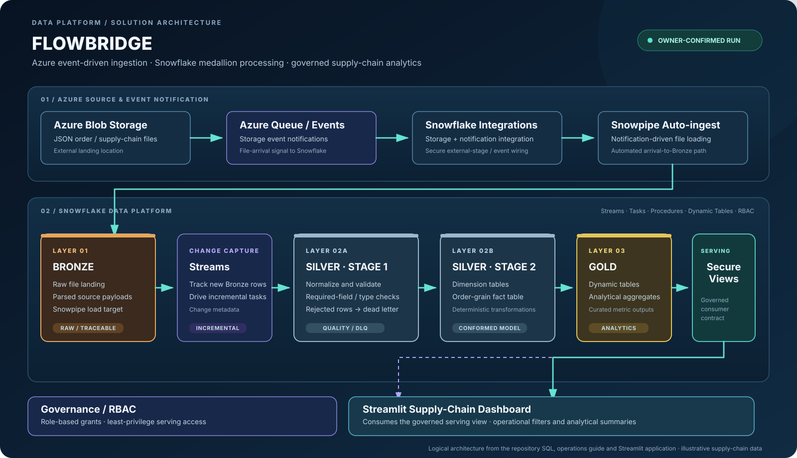
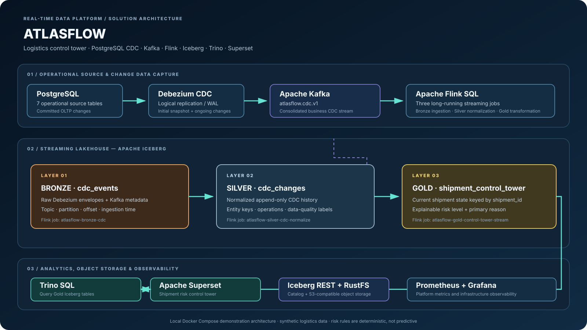

Cloud data engineering
Azure Data Factory, storage integration, cloud deployment patterns and Microsoft Fabric workloads.
DATA ENGINEER · CLOUD ENGINEER · ANALYTICS ENGINEER
I design and engineer data systems across ingestion, transformation, orchestration, governance and analytics. My work focuses on reliable pipelines, explainable data models, observable workloads and practical business outcomes.
01 / ABOUT
I care about the integrity of the whole data lifecycle: where data comes from, how it changes, what guarantees the pipeline provides and whether the final result can be trusted.
I hold a Bachelor’s degree in Biostatistics from Jomo Kenyatta University of Agriculture and Technology (JKUAT). That foundation shapes how I approach data engineering: understand the data-generating process, test assumptions and make analytical outputs explainable.
My portfolio spans Azure data integration, Databricks lakehouse engineering, metadata-driven pipelines, Snowflake analytics, real-time event processing and Microsoft Fabric reporting.
02 / CAPABILITIES
Core engineering capabilities demonstrated across the portfolio. The implementation details and boundaries are documented project by project.
Azure Data Factory, storage integration, cloud deployment patterns and Microsoft Fabric workloads.
Bronze, Silver and Gold processing with Databricks, PySpark, Delta Lake and Apache Iceberg.
Event-driven ingestion and continuous processing with Debezium, Kafka and Apache Flink.
Snowflake SQL, dimensional models, analytical aggregates, secure serving views and data contracts.
Pipeline dependencies, run state, validation, recovery procedures and environment promotion.
Power BI semantic models, Superset and Streamlit experiences built on curated data products.
See the project work03 / SELECTED WORK
Each completed platform has been successfully executed end to end in its intended environment. The architecture diagrams explain the implemented platform design.
AZURE DATA ENGINEERING
An Azure ingestion and transformation platform that brings API, CSV and SQL source data through Azure Data Factory, ADLS Gen2 and Databricks PySpark. The implementation emphasizes standardized Silver outputs, validation, metadata and controlled operational recovery.

DATABRICKS LAKEHOUSE
An incremental retail data platform built around change-aware ingestion, Bronze / Silver / Gold Delta Lake layers, dimensional outputs and orchestration. The design addresses processing state, deterministic merges and historical analytical requirements.


METADATA-DRIVEN HEALTH DATA PLATFORM
A metadata-driven Azure data platform organized around repeatable ingestion and medallion processing. Pipeline behaviour is controlled through metadata rather than hard-coded per-entity orchestration, with standardized analytical layers and documented operational constraints.

SNOWFLAKE SUPPLY-CHAIN ANALYTICS
An Azure-to-Snowflake ingestion and analytics platform using Blob Storage events, Snowpipe auto-ingest, Streams, Tasks, stored procedures, layered modelling, Gold dynamic tables, secure serving views and a Streamlit dashboard.

REAL-TIME DATA ENGINEERING
A local streaming lakehouse that captures PostgreSQL changes with Debezium, transports CDC through Kafka, processes continuous Bronze / Silver / Gold streams with Flink, stores Iceberg tables and serves the Gold shipment control tower through Trino and Superset.

MICROSOFT FABRIC / CONSUMER COMPLAINT ANALYTICS
A Microsoft Fabric analytics solution designed to ingest CFPB complaint data from Kaggle, prepare and transform it with PySpark, model Gold warehouse tables, expose a Power BI Direct Lake semantic model, automate refresh and promote the solution from DEV to PROD.
The project is under active development. Its supplied Microsoft Fabric architecture diagram will be incorporated into the case study as implementation progresses.
04 / TECHNOLOGY
Technology names are included where they are used in the portfolio implementations; the project repositories provide the detailed scope.
Python · SQL · PySpark · Flink SQL
Transformation, CDC processing and data validation.
Microsoft Azure · Microsoft Fabric
ADF, ADLS Gen2, Fabric Lakehouse, Warehouse and deployment.
Databricks · Delta Lake · Snowflake · Iceberg
Incremental models, medallion layers and analytical serving.
Kafka · Debezium · Flink · Fabric Pipelines
CDC, event streams, pipeline scheduling and dependencies.
Power BI · Trino · Superset · Streamlit
Semantic models, SQL serving and dashboards.
Docker · GitHub Actions · Git
Containerized environments, repository validation and version control.
05 / RÉSUMÉ
A concise résumé covering technical focus, education and selected project work.
06 / CONTACT
Open to data engineering roles, cloud data platform work and analytics engineering opportunities.